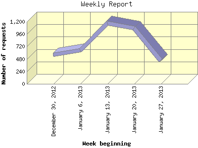

The Weekly Report identifies the activity for each week within the report
time frame. Remember that one page hit can result in several server requests
as the images for each page are loaded.
Note: Depending on the
report time frame for this report the first and last week may not represent
a full seven day week, resulting in lower hits.

| Week beginning | Number of requests | Number of page requests | |
|---|---|---|---|
| 1. | December 30, 2012 | 558 | 219 |
| 2. | January 6, 2013 | 643 | 260 |
| 3. | January 13, 2013 | 1,176 | 282 |
| 4. | January 20, 2013 | 1,073 | 264 |
| 5. | January 27, 2013 | 447 | 78 |
Most active week beginning January 13, 2013 : 282 pages sent.
Weekly average: 220 pages sent. 779 requests handled.
This report was generated on January 28, 2013 20:38.
Report time frame December 30, 2012 00:02 to January 28, 2013 22:40.
| Web statistics report produced by: analog 5.30 / Report Magic 2.15 |